이 문서는 Slider 게임의 공략 가이드입니다. 각 퍼즐에 대한 힌트와 해답이 포함되어 있으며, 접을 수 있는 문단과 스포일러 태그로 각각 구분되어 있습니다. 가이드에 대한 피드백이 있으시다면 알려주시면 업데이트하겠습니다!
현재 위치에 대한 힌트를 확인하려면 해당 지역의 접혀 있는 문단을 찾으세요. 그런 다음 얻으려는 슬라이드 타일에 대한 접힌 부분을 여세요. 예를 들어, '마을 > 슬라이더 8'은 8번째 슬라이드 타일을 얻는 데 도움이 될 겁니다.
Slider는 어렵습니다! 제가 지켜본 대부분의 사람들은 게임 플레이 사이에 휴식을 취하더라구요. 그렇지 않으면 매우 피곤해지고 결국 모든 것을 힘겹게 진행하게 됩니다. "같은 일을 반복하면서 다른 결과를 기대하는 것이 미친 짓"이라면, 제 게임을 플레이할 때 많은 친구들이 미쳐있는 것 같습니다. 종종 쉬다가 다시 플레이할 경우, 퍼즐을 풀기에 훨씬 더 수월합니다.
일반적으로 각 지역의 가장 어려운 퍼즐은 3번째와 6번째 타일 퍼즐입니다. (흥미로운 상호작용이 일어날 만큼 충분한 타일들이 있고, 마음대로 움직이기 어려울 정도로 타일이 많아지기 전이기 때문입니다!) 각 지역의 난이도 곡선은 의도적으로 매끄럽지 않게 설계되었습니다. 이는 어려운 퍼즐을 해결해 나가는 과정을 더욱 인상 깊게 만들어, 플레이어들에게 오래 기억에 남는 경험을 제공하기 위함입니다.
영상으로 된 공략을 원하시면, 누군가가 유튜브에 게임의 전체 플레이 영상을 올려뒀습니다(@dogedeaf 감사합니다)! 다음 링크에서 타임스탬프와 함께 볼 수 있습니다: https://youtu.be/BI7BdPrJBok
스토니브룩 마을은 게임의 첫 번째 지역입니다. 이 지역은 게임 내 세상이 어떻게 작동하는지, 그리고 게임 플레이가 어떻게 흘러가는지 익숙해지는 데 도움을 줄 것입니다. 재미있는 사실: 이 지역의 오리지널 버전은 2021년 GMTK 게임 잼에서 단 48시간 만에 만들어졌습니다!
게임은 당신이 집에서 깨어나는 것으로 시작합니다. 당신은 바닥에서 '유물'을 집어들고 밖으로 나가 혼란에 빠진 세상을 발견합니다. 탐험하다 보면 결국 2번째 슬라이더를 찾을 수 있을 것입니다.
힌트: 타일을 이리저리 움직이며 모든 곳을 탐험해보세요. 시작 타일에서 벗어나거나 다시 돌아올 수 있습니다.
해답: 시작 타일에 서 있는 상태로, 타일을 그리드의 오른쪽 상단으로 이동시키세요. 위쪽에 소가 있는 작은 지역이 있고, 거기에 2번째 슬라이더가 있습니다.
두 번째 타일을 수집하고나서, 타일 사이를 이동하고 지도 가장자리의 맵 밖 구역과 상호작용하기 시작할 수 있습니다. 세 번째 슬라이드 타일은 두 번째 타일에서 쉽게 접근할 수 있죠.
해답: 집이 있는 타일을 강 부분이 있는 타일의 왼쪽으로 이동시키세요. 유적 근처에 있는 NPC인 고고학자와 대화하세요. 그녀와 계속 대화를 나누면 3번째 슬라이더를 줄 것입니다.
지도에 3개의 슬라이드 타일이 있는 상태에서 상황이 약간 까다로워집니다. 'U' 모양의 벽이 있는 3번째 슬라이드 타일에 도달할 방법이 없어 보이지만, 다음 조각이 바로 그곳에 있습니다.
힌트 1: 틀에서 벗어나 생각해보세요!
힌트 2: 두 번째 슬라이드 타일을 어디서 주웠는지 기억나시나요? 아니면, 지도에 있는 소를 기억하시나요?
해답: 집이 있는 1번째 슬라이드 타일로 가서 오른쪽 중앙으로 이동하세요. 타일에서 오른쪽으로 내려와 아래로 걸어가 해변에서 커피를 가져오세요. 다시 타일로 돌아와 오른쪽 상단으로 이동하세요. 거기서 세계의 맵 밖 구역으로 걸어갈 수 있습니다. 그 후, 'U' 모양의 타일을 오른쪽 상단으로 옮기고 그 위에 올라갈 수 있습니다.
4번째 슬라이드 타일에서는 케빈이 당신에게 부표를 재배열하고 얽힌 것을 풀어달라고 요청합니다. 당신은 필요한 곳 어디서든 부표를 집어 올리고 놓을 수 있습니다.
해답: 부표 선들이 서로 교차하지 않도록 해야 합니다. 모든 부표를 한 쪽으로 옮기면 아마 더 쉬울 것입니다. 하나의 부표로 시작해서 선을 따라가며 하나씩 얽힌 것을 풀 수 있습니다. 강을 우회하려면 부표가 있는 타일 옆으로 다른 타일들을 이동시켜야 할 것입니다.
새로운 타일에는 또 다른 집이 있습니다 —— 그리고 그 안에는 행복 충전 고양이가 있습니다. 정말 좋네요! 밖에서는 줄리엣이 지도의 다른 곳에 있는 그녀의 연인을 찾고 있습니다.
해답: 연인들을 재회시키려면 남자가 있는 타일을 여자가 있는 타일 옆으로 이동시켜 서로를 볼 수 있게 하세요. 이는 1번 타일(집이 있고, 벽이 L자 모양)과 가장 최근의 5번 타일(다른 집이 있고, 벽이 L자 반대 모양)입니다.
새로운 타일에는 많은 것들이 있습니다. 어부 피에르가 물고기를 되돌려달라고 부탁하고 있습니다. 또한 폭포와 몇몇 유적도 있습니다.
힌트 1: 어부는 물고기를 요청하고 있고, 물고기는 지도의 왼쪽 상단에 있는 폭포로 가고 싶어 합니다. 하지만 사이를 메울 만큼의 물 타일이 충분하지 않습니다. 진행할 다른 방법이 있습니다.
힌트 2: 강의 일부를 조립할 때(폭포 타일 6을 직선 강 타일 2 옆에 놓으면), 타일 상단의 유적 일부가 맞춰집니다.
해답 1단계: 4개의 서로 다른 타일의 모서리에 있는 유적을 조립해야 합니다. 이들은 세계에서뿐만 아니라 지도의 아이콘 모서리에서도 볼 수 있습니다. 하나는 폭포 타일 6의 오른쪽 상단에, 하나는 가로 직선 강 타일 2의 왼쪽 상단에, 하나는 시작 타일 1의 왼쪽 하단에, 마지막 하나는 'U' 모양 타일 3의 오른쪽 하단에 있습니다.
해답 2단계: 4개의 모서리를 모두 합치면 방향을 가리키는 마법의 화살표가 생성됩니다. 화살표가 가리키는 타일(오두막 타일 5)을 따라가면, 땅에 빛나는 바위가 있습니다. 이 바위와 상호작용하여 다음 슬라이더를 파낼 수 있습니다.
마침내, 마지막 강 조각입니다!
힌트: 이제 4개의 강 타일을 모두 가지고 있으니, 폭포 옆의 어부와 바다에 있는 물고기가 가진 퀘스트를 완료할 수 있습니다.
해답: 왼쪽 상단의 폭포에서 중앙 오른쪽의 바다까지 강을 연결하세요. 순서는 왼쪽 상단의 폭포(타일 6), 중앙 상단의 가로 직선 강(타일 2), 부표가 있는 오른쪽 상단 모서리(타일 4), 그리고 마지막으로 방금 얻은 중앙 오른쪽의 다른 모서리(타일 7)입니다. 그런 다음 물고기와 대화하면 강에 물고기가 지나가고 폭포 옆의 어부가 슬라이더 8을 줄 것입니다.
그리드에 8개의 슬라이드 타일이 들어차 있어서 이것들을 움직이는게 정말 까다로워지고 있네요!
채드가 유물을 집어들었지만, 우리는 그걸 가져가게 허락하지 않았죠. 그 악당은 그걸 가지고 바위 위로 뛰어올랐어요! 그를 내려오게 할 방법이 있을 거예요...
해답: 타일을 흔들면 채드가 균형을 잃고 바위에서 떨어질 것입니다. 유물을 집어 가로 직선 강 타일에 있는 고고학자에게 가져다 줄 수 있습니다.
고고학자에게 유물 조각을 전달한 후, 그녀가 그것들을 소리 내어 읽으면 지도가 뒤섞입니다! 모든 것을 제자리에 돌려놓는 슬라이드 퍼즐을 풀 시간입니다.
힌트: 슬라이드 퍼즐을 풀 때는 많은 조각들이 올바른 위치에 있지만 여전히 해결책과는 거리가 멀 수 있어서 약간 까다롭죠. 3개의 올바른 타일이 있는 단일 행/열이 있다면, 그 행/열의 3개를 건드리지 않고 남은 5개의 타일만 움직여 퍼즐을 해결할 수 있습니다.
해답: 행운을 빕니다 :) https://www.wikihow.com/Solve-Slide-Puzzles
축하합니다, 스토니브룩 마을을 완성하셨습니다! 중앙 타일에 있는 마을 촌장에게 가서 보상을 받으세요(그의 집에 지도가 있습니다). 그 후, 마을 그리드의 오른쪽 상단에서 북쪽으로 이동하여 클로로 동굴로 진입하세요.
클로로 동굴에 오신 것을 환영합니다! 클로로는 무슨 뜻일까요? 클로로는 엽록소(chlorophyll)를 의미합니다. 이 구역은 여러분이 탐험해야 할 새로운 종류의 장애물인 곰팡이 덩어리를 소개합니다. 물론 곰팡이는 엽록소를 가지고 있지 않지만요.
여러분은 남쪽에서 동굴로 들어와 첫 번째 타일에서 시작합니다. 만약 여러분이 관찰력이 높다면, 숨겨진 입구를 통해 동굴로 들어왔을 수도 있습니다. 이 타일에서 여러분은 첫 번째 곰팡이 덤불과 그 안에 갇힌 슬라이드 타일을 발견할 것입니다. 하지만 동굴은 어떤 다른 비밀을 숨기고 있을까요?
힌트: 이 첫 번째 타일만으로도 지도 가장자리의 많은 영역을 접근할 수 있습니다. 조금 탐험해 보세요.
해답: 시작 타일에 있는 동안, 지도 바깥의 왼쪽 하단에서 렌치를, 왼쪽 상단에서 와이어 커터를 찾을 수 있습니다. 이것들을 그리드의 오른쪽 상단에 있는 작업자에게 가져다주면, 그가 불을 켜고 두 번째 슬라이더를 줄 것입니다.
약간의 빛에 곰팡이가 어떻게 반응하는지 탐구해볼 기회가 왔습니다. 더 좋은 점은, 약간의 탐험으로 슬라이더 3을 쉽게 찾을 수 있다는 것입니다.
해답: 방금 얻은 타일을 그리드의 오른쪽 상단이나 오른쪽 하단 모서리로 이동시키세요. 이렇게 하면 빛의 범위 안에 놓이게 됩니다. 빛은 타일 주변의 곰팡이를 물러나게 할 것이고, 이를 통해 세 번째 슬라이드 타일을 집을 수 있습니다.
세상에, 또 다른 조명이군요! 이제 여러분의 전기의 힘 앞에서 곰팡이는 아무것도 할 수 없겠죠...
힌트: 타일 1에 있던 곰팡이에 갇힌 슬라이드 타일을 기억하시나요?
해답: 첫 번째 타일을 오른쪽 상단 모서리에 놓아 오른쪽에서 오는 빛에 노출시키세요. 세 번째 타일을 첫 번째 타일 아래에 놓아 아래에서 오는 빛에 노출시키세요. 이렇게 하면 첫 번째 타일에서 슬라이드 타일 4를 집어들 수 있을 만큼 충분한 곰팡이가 제거될 것입니다.
이 타일에는 동굴 정거장이 있습니다. 하지만 너무 어두워서 문조차 보이지 않습니다!
해답: 조명이 있는 타일을 슬라이드 타일 4 아래로 옮기세요. 이렇게 하면 정거장에 들어갈 수 있습니다. 정거장에 들어가서 채드와 대화하면 슬라이드 타일 5를 받게 됩니다.
여기에서 또 다른 조명을 찾을 수 있지만, 전선이 쥐들에 의해 갉아먹혔습니다. 고고학자가 도착했지만, 또 다른 물건을 잃어버린 것 같습니다! 정말 덜렁대는 사람이네요!
힌트: 큰 다리가 있는 슬라이드 타일에 위치한 손전등에 도달하기 위해서는 이 타일의 조명을 사용해야 합니다.
해답 1단계: 슬라이드 타일 5에서 열쇠 아이템을 집어 동굴 정거장 내부 왼쪽에 있는 작업자에게 돌려주세요. 이렇게 하면 전원을 켤 수 있고, 슬라이드 타일 5가 동굴 정거장의 왼쪽에 있다면 슬라이드 타일 5의 조명에 전원이 공급됩니다. 또한 지도에서 전선을 볼 수 있는데, 전원이 공급되면 노란색으로 밝아집니다.
해답 2단계: 손전등이 있는 타일(강과 큰 다리가 있는 두 번째로 얻은 슬라이드 타일)을 찾아 위쪽과 왼쪽에 조명을 놓으세요. 이렇게 하면 곰팡이 덩어리 뒤에 있는 손전등에 접근할 수 있습니다. 손전등을 고고학자에게 돌려주고 슬라이드 타일 6을 획득하세요.
이 타일은 거대한 곰팡이 지대로 뒤덮여 있고, 슬라이드 타일 7이 그 깊숙한 곳에 놓여 있습니다. 이 퍼즐을 풀기 위해서는 지금까지 배운 모든 것을 활용해야 하지만, 여러분은 충분히 해결 가능하실겁니다! 정거장 조명도 켜놓았는지 확인하세요.
힌트 1: 이 퍼즐은 풀이에 여러 번의 이동이 필요합니다. 그리드를 미리 세팅할 때 이 점을 명심하세요.
힌트 2: 곰팡이 바깥에서 슬라이드 타일까지의 경로를 완전히 전부 밝힐 수 있는 타일 배열은 없습니다.
힌트 3: 곰팡이 덩어리 안에 서 있는 동안에도 타일을 움직일 수 있습니다. (밝혀진 공간에 있다고 가정할 때)
해답: 전원 정거장 조명을 그리드 중앙에, 다른 조명 타일을 왼쪽 상단에, 슬라이드 타일 6을 상단 중앙에 배치하세요. 곰팡이 지대에 들어가 오른쪽에 바위가 없는 열에 서세요. 슬라이드 타일 6을 오른쪽으로 밀고, 다른 조명 타일을 슬라이드 타일 6 아래로 이동시키세요. 그러면 슬라이드 타일 7을 집을 수 있습니다.
이게 무슨 일이죠? 쥐가 슬라이드 타일 8을 훔쳐 도망가고 있습니다! 여러분의 최고의 톰과 제리 연기를 보여줄 시간입니다.
힌트: 쥐가 더 빠르지만, 여러분은 더 똑똑합니다. 지금까지 사용한 메커니즘과 타일을 움직일 수 있는 능력을 활용하세요.
해답: 쥐를 구석으로 몰아 잡거나, 제거된 곰팡이 위로 쫓아 그 후 조명을 없애 곰팡이를 다시 자라게 할 수 있습니다. 어떤 방법을 선택하든, 이제 슬라이드 타일 8을 얻을 수 있습니다.
고고학자는 이미 타일 8에서 대단한 발견을 했지만, 룬 문자를 제대로 읽을 수 없었습니다. 전체 지도를 밝혀보세요! 타일들이 '올바른' 위치에 있는지는 중요하지 않습니다. 모두 밝혀져 있기만 하면 됩니다.
힌트 1: 여러 개의 조명이 타일을 "이중으로 덮는 것"을 피하세요.
힌트 2: 여러분은 지도의 중앙에 조명을 두고 싶을 겁니다.
힌트 3: 다른 조명은 왼쪽 상단이나 왼쪽 하단 모서리에 있어야 합니다. 벽이 어디에 있는지 주의 깊게 살펴보세요!
해답: 가능한 배치가 여러 가지 있습니다. 작업할 방향의 힌트를 더 원한다면, '올바른' 타일 배치도 유효합니다.(빠진 타일 자리는 왼쪽 하단) 스토니브룩 마을의 마지막 퍼즐을 완료했다면, 이번 건 쉽겠죠. 동굴이 밝혀지면 짧은 컷신이 재생되고, 그 후 슬라이드 타일 9를 받게 됩니다.
축하합니다, 클로로 동굴을 완성하셨습니다! 마지막 타일에서 고고학자와 채드와 함께 해적 무리를 발견할 것입니다. 보트 면허증을 받으세요. 이것이 바로 변화하는 바다로 가는 티켓입니다. 스토니브룩 마을 부두로 돌아가 항해를 시작하세요!
변화하는 바다는 Slider의 수중 구역입니다. 다른 게임들의 수중 맵들과 마찬가지로 여기에도 회전하는 물갈퀴가 있습니다. 타일을 밀어내는 대신 회전시킵니다. 할 일과 탐험할 곳이 무척 많습니다!
유물의 화살표를 클릭하여 타일을 회전시키세요.
해답: 첫 번째 타일로 이동하여 보트를 정박하고 X 표시로 걸어가세요. X와 상호작용하면 캣비어드라는 해적을 모래에서 파낼 수 있습니다. 그는 여러분에게 감사를 표하며 슬라이드 타일 2를 줄 것입니다.
술집이 열리면 주인장 밥과 몇몇 술집 손님들을 만날 수 있습니다. 하지만 밥은 닻이 없으면 여러분을 존중하지 않을 거예요 :( 모퉁이에 슬라이드 타일이 있지만, 주사위 게임을 하는 해적들에 의해 막혀 있습니다. 그들을 이길 수 있다면, 그것은 모두 여러분의 것입니다.
힌트: 처음 주사위를 굴릴 때 졌을 수도 있지만, 여전히 주사위를 흔들 수 있습니다.
해답: 주사위를 굴린 후, 타일을 움직이면 주사위가 흔들려 숫자가 증가합니다. 술집 타일을 두 번 움직여 총합이 11이 되도록 하세요. 게임에서 이기고 슬라이드 타일 3을 얻을 수 있습니다.
마침내, 슬라이더에서 가장 강력한 유물 중 하나인 닻을 얻으셨습니다! 이걸 사용하면 타일을 고정할 수 있습니다.
해답: 닻을 집어들려면 물 속의 닻 옆으로 이동해야 합니다. 그런 다음 'E' 키(또는 행동에 할당된 다른 키)로 닻을 집을 수 있고 'Q' 키(또는 저장에 할당된 다른 키)로 보관할 수 있습니다. 닻을 얻은 후에는 밥에게 돌아가세요.
4번째 슬라이드 타일을 해제하면 마법사 페지위그를 만날 수 있습니다. 그는 타일을 움직이는 주문을 시도하고 있지만, 계속해서 바위에서 떨어지며 실패하고 있습니다.
힌트: 여러분에겐 움직임을 고정할 수 있는 도구가 있습니다.
해답: 페지위그가 있는 타일에 닻을 놓아 그가 움직이지 않도록 하세요. 그러면 그의 보상인 마법의 보석을 획득할 수 있고, 이를 밥에게 가져가 술집 패스를 업그레이드할 수 있습니다.
페지위그의 보상을 전달하면, 밥이 이 지역의 나머지 타일들을 줍니다. 정말 친절하죠! 이제 여러분은 모든 보물을 약탈하기 위한 여정을 시작합니다. 각 아이템을 밥에게 가져가면 술집 패스를 점차 업그레이드할 수 있습니다. 모든 아이템을 전달하면 완료할 수 있습니다.
게임 내에서 밥에게 힌트를 요청할 수도 있습니다.
난파선은 새로운 퍼즐 중 가장 쉽습니다.
해답: 지도상에서 난파선의 두 조각을 조립해야 합니다. 그 다음, 주변 지역을 조사하면 상호작용할 수 있는 빛나는 지점을 발견할 수 있고, 그곳에서 보물 상자를 파낼 수 있습니다.
케빈이 해변 어딘가에 다시 나타나 부표 정리를 다시 도와달라고 합니다.
해답: 세 개의 주요 섬 조각을 오른쪽 상단의 각 위치로 이동시키면 도움이 될 수 있습니다. 그렇지 않으면 계속해서 부표를 올바른 위치로 이동시키는게 좋겠죠.
화산 퍼즐은 화산을 중앙에 배치하고 바위가 있는 다른 타일로 둘러싸야 합니다.
해답: 화산 타일을 중앙에 배치한 후, 닻으로 고정하고 다른 타일을 회전시켜 3개의 바위를 정렬합니다. 파란 구체가 그 위에 나타나면 정렬된 것입니다. 마지막 하나가 잘 안들어간다면 화산 대신 바깥쪽 타일 중 하나를 닻으로 고정해 보세요.
안개 낀 바다 퍼즐은 두 개의 안개 낀 타일 위를 특정 순서와 방향으로 이동해야 합니다. 바다 주변의 여러 곳에서 단서를 얻을 수 있습니다.
힌트 1: 힌트는 밥, 술집의 작은 아이, 그리고 술집 뒤 코코넛 아래에서 주어집니다.
힌트 2: 순서는 서쪽, 남쪽, 서쪽, 서쪽, 북쪽, 서쪽입니다.
해답: 두 개의 안개 낀 타일을 가로로 나란히 배치하고 시작하세요. 오른쪽 타일에서 서쪽으로 이동하면 음표 하나가 밝아집니다. 그 다음, 타일을 회전시켜 다른 하나가 아래에 오도록 하고 남쪽으로 이동하세요. 두 번째 음표가 밝아질 것입니다. 서쪽, 서쪽, 북쪽, 서쪽 순으로 계속 이동하여 6개의 음표가 모두 밝아지면 숨겨진 섬이 나타납니다.
로미오와 줄리엣이 다시 서로를 찾고 있습니다. 지도의 왼쪽 상단에 있는 로미오는 오른쪽 하단의 줄리엣에게 편지를 병에 담아서 보내려 하지만, 편지가 그녀에게 도달하기 전에 계속 가라앉고 있습니다.
힌트 1: 병은 타일을 움직일 때마다 한 번 이동하고 두 번 이동 후 가라앉습니다. 즉, 두 번의 이동으로 줄리엣에게 도달해야 합니다.
힌트 2: 해결책은 닻과 관련이 있습니다.
해답: 병을 왼쪽 상단에서 오른쪽 하단으로 두 번의 이동으로 옮기려면 두 번의 대각선 이동이 필요합니다. 이는 닻을 사용해야 가능합니다. 상단 중앙이나 왼쪽 중앙 타일에 닻을 놓고 타일을 회전시켜 대각선으로 이동하게 할 수 있습니다. 닻을 들어 옮기고 이 과정을 반복하면 2번의 대각선 이동으로 병을 전달할 수 있습니다.
바다의 모든 보물을 수집한 후, 밥은 마지막으로 모든 것을 원래 있어야 할 곳에 되돌려 놓도록 부탁합니다. 오른쪽 상단에 세 개의 주요 섬 조각(술집이 있는 곳과 그에 연결된 두 해변)만 제대로 배치하면 됩니다.
그러면 밥이 캐노피 타운으로 가는 길을 막고 있는 나무들을 베어냅니다.
캐노피 타운은 복잡한 모양 생산과 조합을 특징으로 합니다. 고객의 주문을 충족시키기 위해 방울들을 이동시켜 모양을 만들고 조합해야 합니다.
정글에 오신 것을 환영합니다! 시작하려면 오두막 사용법을 배워야 하지만, 하나만으로는 많은 일을 할 수 없을 것입니다.
해답: 사다리를 사용하여 위층으로 올라가 위에 있는 사람과 대화하세요. 그는 "막대기를 좀 보내 달라"고 요청합니다. 생성기의 표지판과 상호작용하여 막대기 기호와 위쪽 화살표가 나타나도록 하면 됩니다. 그 후, 그 사람은 당신에게 다시 내려가서 작업이 완료되었다고 보고하라고 말합니다.
이제 생산을 본격적으로 시작할 시간입니다. 배런이 당신에게 막대기와 원을 달라고 요청합니다.
해답: 막대기를 구멍에 보내면 막대기를 얻을 수 있습니다. 방울들이 구멍에 뛰어들 것이고, 여러분은 아래층의 큰 나무 옆 담요 위에서 그 아이템을 찾을 수 있습니다. 원을 만들려면 두 개의 반원을 같은 표지판에 보내면 됩니다. 그러면 그 둘이 자동으로 결합될 것입니다.
고객들이 물고기와 보트를 요청하고 있습니다. 이들을 만들기 위해 구성 요소를 조합할 수 있는 구조를 찾아야 합니다.
물고기 해답: 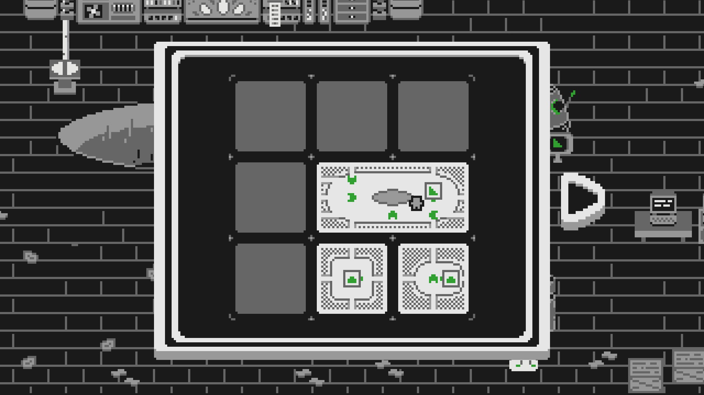
보트 해답: 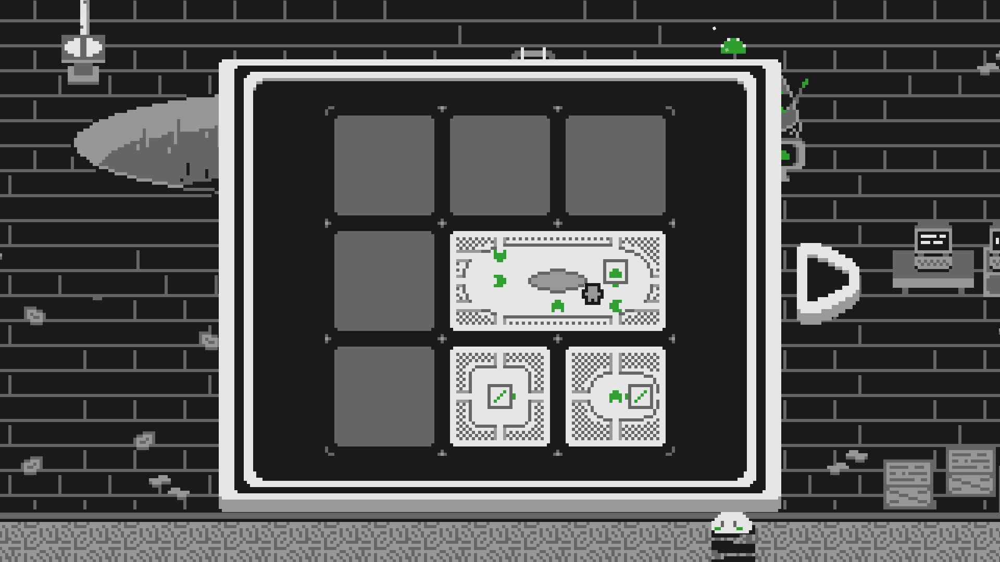
이제 채드와 함께하는 레이스 시간입니다!
채드가 달리기 시작을 준비하는 지점과 넓직한 타일의 종 사이에 트랙을 나타내는 여러 개의 레이스 콘이 있습니다. 트랙을 세팅하려면 타일 5를 타일 2/3의 왼쪽에 배치하세요. 하지만 경주를 시작하기 전에 채드는 깃발을 요청합니다.
깃발 해답: 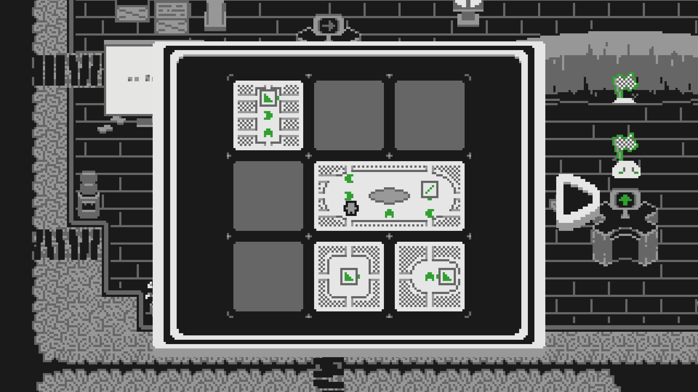
이제 경주가 준비되었으니, 트랙이 잘 세팅된 상태에서 채드와 대화하여 시작할 수 있습니다. 하지만 그는 너무 빠릅니다! 그리고 경주 중에 트랙을 망가뜨리면, 그는 경주를 중단하고 여러분한테 속임수를 썼다고 비난합니다.
힌트 1: 달리기 경주의 규칙에 집중하세요. 시작하거나 끝나는 정확한 조건이 무엇이었죠?
힌트 2: 승리하기 위해서는 유물을 사용해야 합니다.
해답: 채드를 이기려면 그보다 빨리 움직여야 합니다. 유물을 사용하여 타일을 미는 것이 채드의 달리기보다 훨씬 빠릅니다. 레이스 트랙을 망가뜨릴 수는 없지만, 다른 타일을 움직일 수 있습니다. 이기려면 레이스 트랙을 세팅하고 시작 지점 아래에 다른 타일을 놓으세요. 경주를 시작하고, 다른 타일로 뛰어 올라 그것을 오른쪽 끝으로 이동시키세요. 그런 다음 종이 있는 곳으로 달려가 채드가 도착하기 전에 종을 울리면 됩니다.
채드를 물리쳤습니다! 이제 속도의 부츠와 복제기가 있는 6번째 타일을 획득했습니다. 이제 생산해야 할 3가지 새로운 주문이 있네요. 목발, 붕대, 그리고 어항입니다.
목발 힌트: 일부 조합법은 세 가지 모양을 한 번에 합쳐야 합니다.
어항 힌트 1: 어항을 만들려면 5개의 구성 요소가 필요합니다.
어항 힌트 2: 먼저 복제기 타일이 어디에 있어야 하는지 파악하고, 그 주변에 나머지 타일을 배치해 보세요.
목발 해답: 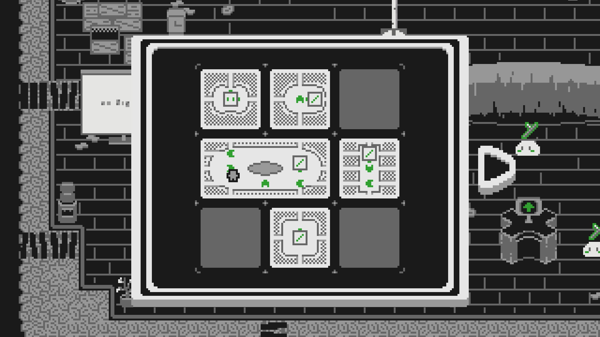
붕대 해답: 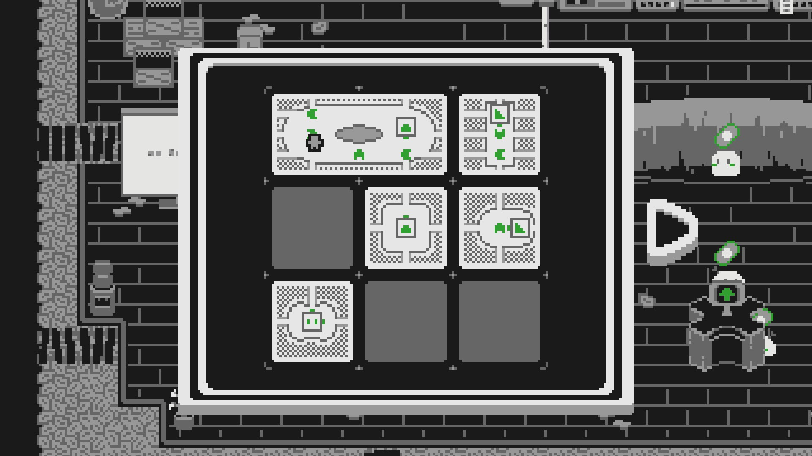
어항 해답: 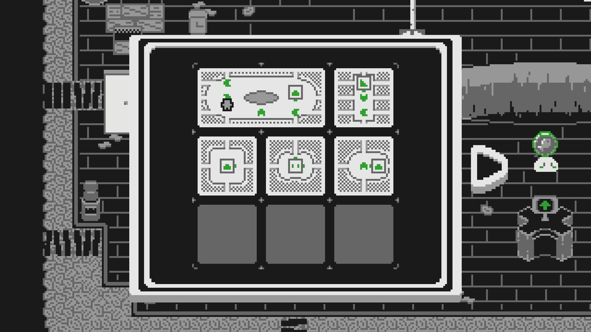
가장 까다로운 고객들이 도착했습니다. 이제 광산 수레와 레일을 만들 시간입니다.
힌트 1: 각 모양을 만드는 데 필요한 구성 요소의 수를 생각해보세요. 광산 수레는 총 6개, 레일은 총 7개가 필요합니다.
힌트 2: 먼저 복제기 타일이 어디에 있어야 하는지 파악하고, 그 주변에 나머지 타일을 배치해 보세요.
광산 수레 해답: 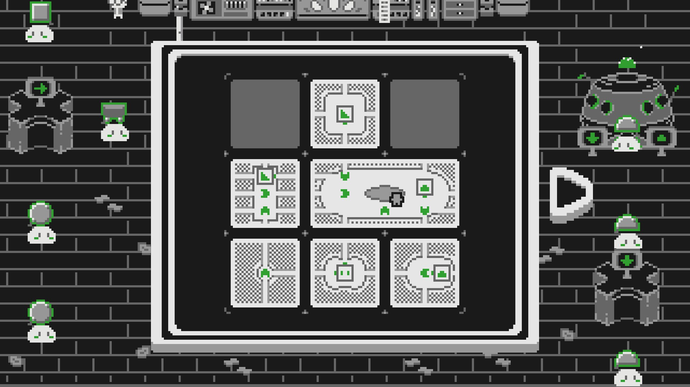
레일 해답: 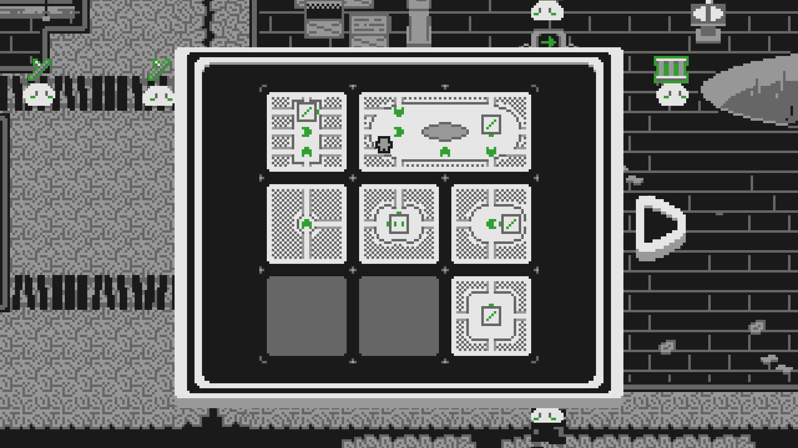
이 지역이... 완성되었나요? 9번째 타일을 획득했지만, 모든 것이 여전히 뒤죽박죽입니다. 이를 해결할 유일한 방법은 또 다른 유물, 재정렬의 두루마리를 찾는 것입니다. 우리의 여정은 사막에서 계속됩니다!
격변의 땅은 다섯 번째 지역으로, 캐노피 타운을 완성하는 데 필요한 중요한 유물이 있습니다. 기존처럼 한 번에 한 타일씩 움직이지 않고, 모든 타일이 한 방향으로 한꺼번에 미끄러집니다!
정글에서의 강이 여기로 이어집니다! 타일이 어떻게 움직이는지 익히고, 악어와 대화하고, 지도의 가장자리를 탐험해 보세요.
힌트: 지도의 오른쪽 상단에 있는 야영중인 사람이 다음 타일을 가지고 있습니다.
해답: 첫 번째 타일에서 다리를 건너 내려가면 통나무를 찾을 수 있습니다. 통나무를 집어 그리드의 오른쪽 상단에 있는 지도 밖의 모닥불로 가져가세요.
이제 오아시스가 지도에 생겼으니, 강 조각과 연결해서 악어가 이동할 수 있게 해보세요.
힌트: 닻을 사용해 타일 하나를 고정하세요!
해답: 두 타일 중 하나로 걸어가서 닻으로 고정한 다음, 다른 타일을 미끄러뜨려 오아시스가 강 위에 오도록 하세요.
이제 원숭이와 자칼을 파티에 데려올 시간입니다! 세 개의 나무가 있는 타일로 가서 원숭이를 만나보거나, 거대한 화석이 있는 타일에서 자칼을 방문하세요.
원숭이 힌트 1: 오아시스 오른쪽에 있는 나무 중 하나의 기둥에 무언가가 묶여 있습니다. 원숭이의 나무에서 나온 밧줄을 그곳에 묶으세요.
원숭이 힌트 2: 밧줄을 테스트할 때, 원숭이의 타일과 오아시스를 서로 옆에 붙여 두세요.
원숭이 힌트 3: 닻을 사용해 수평과 수직 슬라이드를 각각 세팅하거나, 네 개의 타일을 2x2 정사각형으로 배치하세요. 다섯 개의 타일이 있다면, 다섯 번째 타일을 오아시스와 원숭이 타일과 같은 행에 두세요.
원숭이 힌트 4: 오아시스와 원숭이의 원래 타일을 닻으로 분리하여 밧줄을 타고 넘어오던 원숭이를 떨어뜨리세요.
자칼 힌트 1: 자칼의 새 뼈는 지도의 왼쪽 상단에 있습니다.
자칼 힌트 2: 자칼의 타일을 뼈 방향으로 미끄러뜨리고 자칼에게 충분한 시간을 주세요.
자칼 해답: 자칼과 대화하고 대화를 진행하세요. 자칼을 지도의 왼쪽 상단으로 데려가세요. 자칼이 거대한 화석 타일의 왼쪽 경계에 있으면, 닻을 사용해 지도의 상단 행을 분리한 다음, 오른쪽으로 두 타일, 왼쪽으로 두 타일을 미세요. 그 후 오아시스를 왼쪽 상단으로 가져와 자칼이 파티에 참여할 수 있게 하세요.
카지노에서 가젤과 채드를 찾을 수 있지만, 가젤은 VIP 전용 구역에 있습니다. 들어가려면 선글라스가 필요합니다! 일단 카지노에 들어가 채드를 찾으세요. 카지노를 조립하고, 주사위를 채드에게 가져가 11 맞추기 게임에서 그를 이기세요!
힌트 1: 카지노 타일을 움직이면 해당 타일의 주사위 숫자가 1 증가합니다. 카지노 2조각이 함께 움직이게끔 노력하세요.
힌트 2: 닻을 카지노 타일에 놓으면 그 타일의 주사위 숫자가 1로 변합니다.
힌트 3: 11을 굴리는 가장 쉬운 방법은 두 카지노 타일을 서로 옆에 두고 시작하는 것입니다. 하나를 '2'로 설정하고 닻을 사용해 다른 하나를 '1'로 설정하세요. 그 후 두 타일을 모두 움직여 11이 되도록 합니다. 그러면 채드는 절망할 것입니다!
이제 신기루를 볼 시간입니다!
거대한 화석의 꼬리가 있는 타일의 오른쪽 아래에 있는 선인장 근처의 VIP와 대화하세요. 근처의 금고를 열 수 있다면 그의 선글라스를 받을 수 있을 겁니다.
힌트 1: 여러분이 타일을 이동시키면 두 개의 비어있는 칸에 신기루가 생깁니다! 이들은 원래 그 자리에 있던 두 타일의 과거 버전을 보여줍니다.
힌트 2: 신기루 타일 위에 서서 타일을 밀면 현재 버전 타일로 순간이동합니다.
해답: 거대한 화석의 꼬리가 있는 타일에서 VIP와 대화하세요. 선인장 주스를 마시세요. 카지노의 왼쪽 부분 타일을 밀어서 신기루를 활성화하세요. 카지노 신기루 타일의 카운터 뒤로 걸어가서 아무 타일이나 밀어서 일반 카지노의 카운터 뒤로 순간이동하세요. 카지노 타일의 현재 버전에서 두루마리 조각을 획득하세요.
이제 금고를 열 시간입니다! 공룡 화석에 아직 약간의 힘이 남아있는 것 같습니다. 화석 머리 타일의 신기루에 있는 마법사와 대화하세요.
힌트 1: 두루마리 조각은 그리드 중앙의 타일을 강조 표시된 빈 타일 자리로 이동시킵니다.
힌트 2: 공룡 레이저를 활성화하려면 화석의 신기루 머리를 꼬리(현재 또는 신기루)와 연결한 다음 마법사와 대화하세요! 먼저 화석을 정렬한 다음, 두 타일을 모두 움직이거나 머리 타일만 움직이세요.
힌트 3: 두루마리 조각을 사용하여 꼬리 타일을 "복제"하면 공룡 레이저가 꼬리 타일의 금고를 맞출 수 있습니다.
해답 1단계: 레이저를 켜려면 아래 행에 꼬리와 머리 화석을 알맞게 정렬하고 위 행에 두 개의 빈 공간을 두고 위로 슬라이드하세요. 신기루 머리 타일로 이동하여 마법사와 대화하세요.
해답 2단계: 다음으로, 꼬리를 그리드 중앙에 두고 머리가 그 오른쪽에 위치하도록 화석을 다시 배치하세요. 오른쪽 상단 모서리에 빈 공간이 있는지 확인하세요. 두루마리 조각을 사용하여 그곳으로 이동시켜 레이저가 금고를 맞추도록 하세요. 보상을 받으러 VIP에게 가세요.
이제 선글라스를 가지고 카지노의 VIP 구역에 있는 가젤과 대화하여 그를 깜짝 파티에 데려올 수 있는지 확인하세요.
해답: 오아시스를 카지노 오른쪽 절반 타일의 왼쪽이나 아래로 가져오세요.
고고학자가 유적 근처에서 빛나는 석판을 보고 있는 것 같습니다. 유적을 읽어 보면 모든 것이 뒤섞입니다! 왠지 데자뷰를 느끼네요?
힌트: 마을에서처럼 먼저 한 줄을 완전히 해결한 다음 나머지 다섯 개의 타일을 맞춰보세요. 대부분의 경우, 이 슬라이드 퍼즐은 타일 밀기, 두루마리 조각, 그리고 가끔의 닻 사용만으로 완전히 해결할 수 있습니다. 두루마리 조각을 사용하여 순서를 고치기 위해 일시적으로 타일을 맞는 자리에서 옮기는 것을 두려워하지 마세요! (대각선 이동은 매우 중요합니다!)
사원으로 들어가 돌무더기를 치우고 재정렬의 두루마리를 집으세요. 하지만 함정 없이 그냥 상을 받을 순 없겠죠...
힌트: 재정렬의 두루마리가 있는 방은 사원의 맨 아래에 있습니다. 그곳에 도달하기 위해 몇몇 바위를 치워야 할 수도 있습니다.
해답: 바위를 집어 옮기고 지도의 아래쪽 방으로 걸어가세요. 함정이 작동한 후, 두루마리 버튼 대신 나타나는 유물의 새로운 반짝이는 탭을 클릭하세요! 짜잔, 자동으로 해결됩니다!
이제 재정렬의 두루마리를 가지고 돌아가 캐노피 타운을 고치고, 그 다음 동쪽의 로켓 공장 센터로 향하세요!
재정렬의 두루마리로 두 가지 추가 능력도 얻게 됩니다. 이제 => (저장) 버튼과 <= (불러오기) 버튼을 클릭하여 그리드를 저장하고 불러올 수 있습니다. 이는 움직이는 과정을 실행하기 전에 퍼즐 세팅을 저장하고 싶을 때 유용할 수 있습니다.
로켓 공장은 아마도 Slider에서 가장 어려운 지역일 것입니다. 여기서는 전력, 전선, 컨베이어 벨트, 그리고 타임 게이트가 추가됩니다. 또한 퍼즐이 매우 밀집되어 있습니다.
이 문단에서는 타임 게이트의 작동 방식에 대해 혼란이 있을 경우를 대비해 자세히 설명하겠습니다! 이를 파악하고 활용할 수 있는 특수한 상황을 찾는 것이 재미있는 플레이의 일부이지만, 답답할 때를 대비해서 설명을 적어 두겠습니다.
타임 게이트의 목표는 일정 횟수의 타일 이동 내에 모든 입력부에 전원을 공급하는 것입니다. 게이트 근처의 배터리나 게이트 자체의 LED 표시기를 통해 전원을 공급해야 하는 입력부를 볼 수 있습니다. 모든 입력부에 전원을 공급할 수 있다면, 게이트는 영원히 켜진 상태로 유지됩니다.
게이트에 표시된 커다란 숫자는 남은 타일 이동 횟수를 나타냅니다. 게이트에 2가 표시되어 있다면, 단 두 번의 타일 이동 안에 전체 입력부에 전원을 공급해야 합니다. 다만, 컨베이어 벨트에 의한 이동은 이 제한에 포함되지 않습니다!
이동 횟수는 완전히 끝난 후에만 1번만 차감됩니다. 이는 한 번의 조작으로 컨베이어 벨트 이동을 연쇄적으로 일으켜 더 많은 효과를 얻을 수 있다는 의미입니다.
광산 수레 레일을 수리하고 사막에서 재정렬의 두루마리를 얻었다는 것을 증명하면 정글에서 공장에 들어갈 수 있습니다. 안에 들어가면 몇몇 NPC와 대화할 수 있고 타임 게이트 메커니즘이 소개됩니다.
첫 번째 슬라이드 타일은 시작 지역 위의 닫힌 문 안에 있습니다.
해답: 깨진 화면이 있는 타임 게이트를 활성화하고 그에 연결된 세 개의 버튼에 모두 전원을 공급해야 합니다. 이렇게 하면 문이 열리고 첫 번째 슬라이드 타일을 획득할 수 있습니다.
드디어 지도에 슬라이드 타일이 생겼습니다! 하지만 더 많은 슬라이드 타일을 찾기 전에 먼저 이 타일 위로 올라가 조금 탐험해야 합니다.
타임 게이트: 시작 지역을 떠나려면 문 아래의 타임 게이트를 활성화해야 합니다. 이 게이트에는 당신이 밟을 수 있는 전원 버튼이 하나 있고, 다른 하나는 다른 타일로 연결된 전선입니다. 타일을 움직이면 타임 게이트가 리셋될 수 있습니다. 이 타임 게이트는 단 두 번의 타일 이동만 허용하기 때문입니다.
힌트: 닻을 사용하여 버튼을 누른 상태로 유지하면서 문이 열린 지역을 탐험할 수 있습니다.
해답: 지도의 오른쪽 상단 부분에 도달하고 스위치를 누르면 문이 열립니다(그리고 컨베이어 벨트가 켜져 갇히게 됩니다). 그런 다음 안에 있는 전도체 구슬을 움직여 다른 슬라이드 타일이 놓여있는 곳까지 이동할 수 있습니다.
두 번째 슬라이드 타일에는 거대한 전자석이 있는데, 이는 지도의 왼쪽 하단에 있는 거대한 자석과 맞물립니다. 3번째 슬라이드 타일도 그곳에 있습니다.
힌트: 전자석에 전원을 공급할 때 컨베이어 벨트는 타일을 움직이게 하지 못합니다.
해답: 버튼 위에 서서 타일을 왼쪽 하단으로 이동시키세요. 그런 다음 버튼 가장자리에 서 있는 상태에서 닻을 내려놓아 당신이 떠나도 버튼이 계속 눌려있게 하세요. 안전하게 아래로 걸어가서 3번째 타일을 집을 수 있습니다.
3개의 타일이 있는 상태에서, 더 많은 타임 게이트는 상황을 조금 더 까다롭게 만듭니다. 사실 세 배나 더 까다롭습니다.
쉬운 타임 게이트 해답: 방금 얻은 타일(오른쪽 벽에 타임 게이트가 있는 것)에서 시작하세요. 자석이 있는 타일을 왼쪽에 정렬하고 다른 타일을 그 위에 놓으세요. 그런 다음 타임 게이트를 켜고 버튼 위에 서서 전선에 전원을 공급하세요. 다른 타일로 걸어가 버튼 위에 서고, 남은 전선에 전원이 공급되도록 타임 게이트를 미세요.
어려운 타임 게이트 힌트 1: 몇몇 컨베이어 벨트는 켜고 끌 수 있습니다.
어려운 타임 게이트 힌트 2: 컨베이어 벨트에 의한 이동은 타임 게이트 횟수에서 차감되지 않습니다.
어려운 타임 게이트 힌트 3: 컨베이어 벨트는 닻이 놓인 타일도 움직일 수 있습니다.
해답 1단계: 오른쪽 상단 컨베이어 벨트를 끈 상태로 시작하세요. 오른쪽에 문이 있는 타일을 그리드의 중앙 오른쪽에 놓으세요. 그런 다음 상단에 문이 있는 첫 번째 타일을 오른쪽 상단에, 자석이 있는 타일을 중앙 상단에 놓으세요.
해답 2단계: 화장실에 연결된 타임 게이트를 켜세요. 오른쪽 상단 타일에 닻을 놓고 컨베이어 벨트를 켜서 아래로 이동시키세요. 타임 게이트의 이동 횟수를 차감하지 않고도 한 줄에 전원이 공급될 겁니다. 그런 다음 다른 자석 타일로 걸어갈 수 있습니다. 버튼 위에 서서 슬라이드 타일을 컨베이어 벨트 위로 이동시키세요. 이렇게 하면 이동이 끝나기 전에 두 번째 줄에 전원이 공급됩니다.
4번째 타일을 얻고 나면, 다음 슬라이드 타일을 3D 프린팅하기 위해 여러 부품을 모아야 합니다. 이 부품들은 공장 주변의 3군데 다른 위치에서 찾을 수 있습니다. 3개의 부품을 모두 얻은 후에는 3D 프린터를 사용하여 다음 슬라이드 타일을 만들 수 있습니다.
장소들: 슬라이드 베이스는 프린터와 같은 타일에 있고, 벽은 공장의 왼쪽 상단에, 전선은 공장의 오른쪽 하단에 있습니다.
힌트: 한 부품을 얻기 위해서는 두 번째 아이템이 필요합니다. 닻은 이미 가지고 있지만, 지도의 오른쪽 상단에 있는 게이트 구역에서 전도체 구슬을 꺼내와서 사용해야 합니다.
슬라이드 베이스 해답: 베이스에 접근하려면 두 개의 선에 모두 전원을 공급하여 두 문을 한꺼번에 열어야 합니다. 이를 위해 위의 힌트에서 언급한 대로 두 개의 아이템이 필요합니다. 울타리의 구멍을 통해 닻을 사용하여 두 개의 전선을 연결할 수 있습니다. 그런 다음 걸어 들어가 전도체 구슬을 집고 나올 수 있습니다. 그 후에는 닻과 구슬을 사용하여 두 문을 모두 열 수 있습니다.
벽 해답: 벽 부품은 공장 왼쪽 상단의 거대한 문 뒤에 있습니다. 프린터가 있는 타일을 사용하여 근처의 타임 게이트에 전원을 공급할 수 있습니다.
전선 해답: 전선 부품은 공장의 오른쪽 하단에 있습니다. 보통은 중간에 있는 컨베이어 벨트가 타일을 움직여서 그곳에 도달할 수 없습니다. 하지만 그리드의 맨 아래 행에 세 개의 타일을 끼워 넣으면, 컨베이어가 타일을 밀어낼 수 없게 되어 공장 맨 아래로 걸어갈 수 있습니다.
6번째 타일을 얻기 위한 퍼즐은 공장 주변의 여러 와이파이 지점에 타임 게이트 방식으로 전원을 공급하는 것입니다.
힌트: 컨베이어 벨트를 적절하게 사용하세요. 특히 타임 게이트가 0을 깜빡이는 동안의 시간도 잘 활용해야 합니다.
해답: 한 가지 해결책은 서버실 타일을 그리드의 하단 중앙에, 오른쪽 중간으로 연결된 전선이 있는 타일을 오른쪽 중앙에 배치하는 것입니다. 타임 게이트를 켜고 걸어가서 버튼 위에 서서 전원을 공급할 수 있습니다. 그런 다음, 타일을 아래로 이동시켜 모든 와이파이 지점에 전원을 공급하는 연쇄 반응을 일으킬 수 있습니다. 일부 타일을 미리 치워두거나 더 많은 컨베이어에 전원을 공급해야 할 수도 있습니다.
이제 거대한 메가 크리스탈에 전원을 공급할 시간입니다! 하지만 6개의 입력이 필요한데다가 타임 게이트 숫자가 0이라구요?!
힌트 1: 모든 입력에 동시에 전원을 공급하도록 설정하려고 하면, 일부 타일이 동시에 여러 위치에 있어야 한다는 것을 빠르게 알 수 있습니다. 이는 불가능합니다!
힌트 2: 타일이 움직이는 동안에는 타임 게이트가 계속 활성화 상태를 유지합니다.
힌트 3: 메가 크리스탈은 지도의 중앙에 있어야 합니다.
해답 1단계: 퍼즐을 해결하려면 컨베이어 벨트의 루프를 세팅하여 항상 움직이도록 해야 합니다. 이렇게 하면 루프가 메가 크리스탈을 중심으로 타일을 이동시킬 때 각 입력에 전원을 공급할 수 있습니다.
해답 2단계: 먼저 컨베이어 벨트 긴급 정지 기능을 사용해 컨베이어 벨트가 움직이지 않도록 하세요. 그런 다음 공장 주변의 모든 컨베이어 벨트에 전원을 공급하세요. 마지막으로, 다시 활성화하기 전에 서버실에 전원이 공급되어 루프 동안 상단 두 개의 입력에 전원이 공급될 수 있도록 하고, 메가 크리스탈이 지도의 중앙에 있는지 확인하세요. 컨베이어 벨트 루프를 켜고 모든 것에 전원이 공급되는 것을 지켜보세요! 버튼 위에 서거나 닻 또는 전도체 구슬을 사용하여 버튼을 누르고 있어야 합니다. 자석이 타일을 멈추고 루프를 방해하지 않도록 주의하세요.
해답 3단계: 크리스탈에 전원이 공급되면 과부하가 발생하여 정전이 일어납니다. 그러면 크리스탈 타일을 사용하여 서버실에 전원을 공급하고 연구원 진과 대화하여 서버 스크립트를 실행해야 합니다. 이렇게 하면 모든 것이 리셋되지만, 동시에 여러분을 과거로 보내게 됩니다.
우리는 과거로 시간 여행을 했습니다! 주변을 탐험해 보세요. 이 구역은 더 쉬울 겁니다.
해답: 몇 개의 전도체 구슬을 모아 오른쪽 상단의 바위를 폭파하여 슬라이드 타일 8에 접근하세요
충분한 전도체 구슬이 있다면 마법사 페지위그가 여러분을 미래로 돌려보내는 데 도움을 줄 수 있습니다.
힌트 1: 지도에 크리스탈에 전원을 공급할 수 있는 충분한 양의 전도체 구슬이 있습니다. 채드에게서 하나를 얻을 수 있지만, 그가 그냥 주지는 않을 겁니다.
힌트 2: 크리스탈에 전원을 공급한 직후, 시간 패러독스가 발생합니다! 타일 중 하나가 영향을 받아 페지위그가 요청한 시간 교정기가 생겼습니다.
힌트 3: 시간 교정기를 얻으려면 문 사이에 서 있는 상태에서 어떻게든 문의 전원을 끊어야 합니다.
해답: 전도체 구슬을 끊긴 전선의 왼쪽에 놓되, 다른 타일 위에 있도록 하세요. 그런 다음 문 사이로 가서 슬라이드 타일을 움직여 전선의 연결을 끊을 수 있습니다. 그 후, 페지위그의 크리스탈에 다시 전원을 공급하고 미래로 돌아가세요!
축하합니다, 가장 어려운 지역을 완성했습니다! 로켓 공장을 수리한 후, 공장장은 당신에게 평원의 군대를 돕고 크리스탈 광산에서 보석을 회수하는 임무를 줄 것입니다. 둘 중 아무거나 먼저 해도 상관없습니다!
평원 지역에서는 무자비한 외계인들을 물리치기 위해 로봇 군대를 지휘하며 싸워야 합니다. 이 영역에서는 원하는 만큼 다시 시도할 수 있습니다.
이 지역은 많은 랜덤성을 특징으로 하므로 명확한 해결 답안은 없습니다. 하지만 몇 가지 팁을 드릴 수 있습니다.
- 가능한 한 자주 이기려고 노력하세요(이길 수 없다면 비기세요). 처음 몇 웨이브의 외계인은 같은 방식으로 다가올 것이지만, 그 이후에는 여러분의 잠재력을 최대한 발휘해야 합니다.
- 병력 보급을 바로 사용할 필요는 없습니다. 종종 더 좋은 시기까지 기다렸다가 병력을 생성하는 것이 가치 있을 수 있습니다.
- 총 6개의 웨이브가 있으며, 적의 수가 점점 증가합니다. 또한 대략 두 번째 슬라이드 타일마다 보급을 받게 됩니다.
- 현재 웨이브의 모든 외계인을 물리치면 다음 웨이브가 생성됩니다. 1-2마리의 외계인만 남았을 때, 다음 웨이브를 대비해 지도와 병력을 미리 재배치하려고 노력하세요.
- 가능한 한 지도를 이동하기에 자유로운 상태로 유지하세요. 깃발을 옮기는 것보다 2-3개의 타일을 밀어내어 나쁜 상황에서 벗어나는 것이 더 쉽습니다. 벽이 있는 슬라이드 타일은 지도의 가장자리 근처에 배치하세요.
크리스탈 광산은 8번째 지역이며 게임에서 가장 어려운 지역 중 하나입니다. 이 지역에는 3D 그리드, 얼음, 용암, 크리스탈, 그리고 탐험해야 할 거대한 광산 수레 트랙이 있습니다.
크리스탈 광산에 접근하는 것은 다른 지역보다 덜 직관적입니다. 공장장의 지시에 따라 공장에서 클로로 동굴로 이어지는 철로를 따라갈 수 있습니다. 불행히도 그 입구는 막혀 있어서 다른 방법을 찾아야 합니다.
힌트: 동굴에 있는 거대한 문에는 끊긴 전력선이 연결되어 있습니다.
해답: 동굴의 왼쪽 상단 타일에 있는 두 전선의 사이에 닻을 사용하여 연결하세요. 이렇게 하면 거대한 문이 열리고 크리스탈 광산에 접근할 수 있습니다.
불쌍한 바비짐이 얼음 속에 갇혔습니다! 그를 구하려면 얼음과 용암이 어떻게 작동하는지 배워야 합니다.
힌트: 얼음은 용암의 범위 내에 있을 때 녹고, 용암의 범위를 벗어난 상층에 있을 때 얼어붙습니다.
해답: 슬라이드 타일을 움직여 그 위에 올라타세요. 작은 얼음 조각을 얼리기 위해 타일을 상층으로 이동시키고 바비짐에게 걸어가세요. 바비짐 주변의 얼음을 녹이려면 타일을 다시 하층의 왼쪽 하단 모서리로 이동시키세요.
2번째 타일 에 지하실이 있지만, 문이 잠겨 있는데다 얼어붙은 상자로 막혀 있습니다. 상자를 부수고 열쇠를 얻을 방법을 찾아야 합니다.
상자 힌트: 물건을 부수는 데 완벽한 크고 무거운 금속 물체가 무엇이 있을까요?
열쇠 힌트 1: 바비짐에게 용암 양동이가 필요합니다. 하층에 있는 장인이 제공할 수 있습니다.
열쇠 힌트 2: 새로 얻은 슬라이드 타일의 용암 웅덩이를 사용해 양동이를 채울 수 있을 것 같습니다. 하지만 어떻게요?
상자 해답: 닻을 사용하여 문 앞의 상자를 부수세요.
열쇠 해답 1단계: 하층 왼쪽 하단에 있는 장인 버트를 방문하세요. 그는 친절하게도 양동이를 무료로 줄 것입니다. 이것을 짐바비에게 가져가세요.
열쇠 해답 2단계: 용암 양동이를 하층의 맨 아래 줄에 배치하세요. 지하실이 있는 슬라이드 타일을 상층 칸에 놓으세요. 용암이 가장자리로 흘러내려 양동이를 채울 것입니다. 바비짐과 대화하여 열쇠를 받으세요. 지하실에 들어가면 몇 개의 상자를 부수고 얼어있는 슬라이드 타일을 얻을 수 있습니다. 닻으로 부수거나 들어서 용암 근처로 가져가 녹일 수 있습니다.
이 거대한 물레바퀴는 다양한 장치에 전력을 공급합니다. 불행히도 톱니바퀴가 얼어붙었습니다!
힌트 1: 상층 왼쪽을 따라 흐르는 강이 동력을 제공할 수 있습니다.
힌트 2: 전에 어떻게 얼음을 제거했었나요? 각 톱니바퀴마다 다른 방법이 필요할 겁니다.
힌트 3: 상층의 타일에 닻을 내려놓더라도 아래에 다른 타일이 있을 경우 떨어지지 않습니다.
해답: 상층에서 물레바퀴 타일을 왼쪽 하단에, 지하실 타일을 그 위에 놓으세요. 용암이 위쪽 톱니바퀴를 녹일 것입니다. 남은 슬라이드 타일을 물레바퀴 타일의 바로 아랫층 자리에 놓고, 닻을 사용하여 아래쪽 톱니바퀴의 얼음을 부수세요.
다음 슬라이드 타일에는 크리스탈 처리 기계와 광산 수레 레일이 가로지르는 거대한 얼음 지대가 있습니다.
오랫동안 광산 수레 레일만 보면서 침만 흘렸지만, 이제 마침내 지도 오른쪽 하단의 입구가 붕괴된 동굴을 정리하여 광산 수레를 얻을 수 있습니다.
힌트: 폭발물을 터뜨리려면 용암이 필요할 것입니다.
해답: 방금 얻은 슬라이드 타일을 하층의 오른쪽 하단 모서리로 이동시키세요. 전원이 공급된 레일 근처의 NPC와 대화하여 폭발물을 작동시키면 벽이 폭파되고 광산 수레를 얻을 수 있습니다.
이 슬라이드 타일의 거대한 빙판은 광산 수레의 지름길 역할을 할 수 있습니다! 바로 옆의 먼처의 지시를 따라 어떻게 작동하는지 확인하세요.
해답: 빙판 타일을 나무가 있는 타일 바로 위에 놓으세요. 빙판 타일의 레일 위에 광산 수레를 놓으세요. 닻을 사용하여 얼음을 부수고 광산 수레가 아래로 떨어지는 것을 지켜보세요.
MRI의 연구원인 사라가 크리스탈 추출기를 조사하고 있습니다. 그녀의 연구를 돕기 위해 추출기에 전원을 공급하고 광산 수레를 사용하여 크리스탈을 채워야 합니다. 노란색 전원이 공급된 레일에 광산 수레를 놓으면 출발할 수 있습니다. 주의하세요. 광산 수레에 크리스탈이 가득 찬 상태에서 타일을 움직이면 크리스탈이 파괴됩니다!
전력 힌트 1: 물레바퀴를 사용해 볼 순 있지만 유효한 세팅을 찾지 못할 것입니다. 다른 전력 발생 방법이 있나요?
전력 힌트 2: 엘리베이터에 전원을 공급하는 발전기가 있습니다.
해답: 닻을 사용하여 엘리베이터 발전기를 물레바퀴 전선의 끊긴 부분에 연결하세요. 추출기로 연결될 겁니다.
크리스탈 힌트: 전원이 공급된 레일에서 크리스탈 저장소를 거쳐 크리스탈 추출기까지 연속된 하나의 트랙을 형성할 수 있습니다. 분기점이 어느 방향을 가리키고 있는지 주의 깊게 살펴보세요.
크리스탈 해답: 크리스탈 추출기 슬라이드 타일을 하층의 왼쪽 하단에 놓으세요. 오른쪽에 지하실 타일을 놓고, 그 위에 물레바퀴 타일을 놓으세요. 남은 슬라이드 타일을 아래층의 마지막 자리에 놓으세요. 지하실 타일의 스위치가 모두 켜져 있고 크리스탈 루프의 위쪽 스위치가 꺼져 있는지 확인하세요. 광산 수레를 트랙 주위로 보내고 크리스탈을 집어 저장하는 것을 지켜보세요. 전체 타일 세팅은 다음과 같습니다:
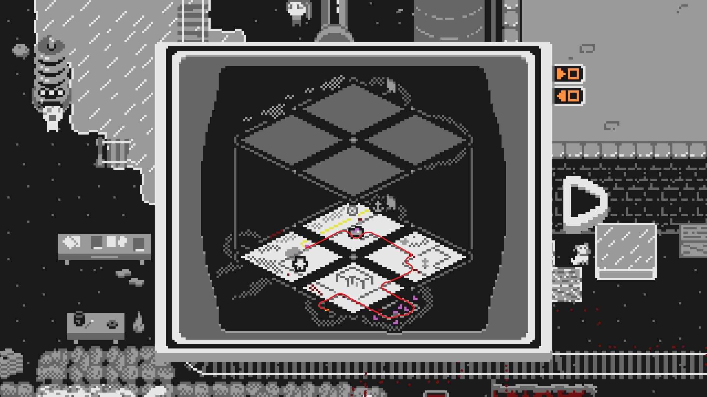
실험을 진행할 시간입니다. 불행히도 전압이 너무 높아 발전기와 크리스탈 추출기 모두 손상됩니다. 이들을 수리해야 할 것 같습니다. 발전기를 수리하려면 크리스탈이 필요합니다.
힌트 1: 광산 수레는 항상 들어간 반대편에서 크리스탈 루프를 빠져나갑니다.
힌트 2: 광산 수레가 사용한 입구의 반대편에 있는 크리스탈 루프 레버를 사용하여 광산 수레를 루프에 가둘 수 있습니다.
힌트 3: 여러분은 광산 수레가 크리스탈 루프에 있는 동안 타일을 이동할 수 있습니다.
해답: 이전과 같이 하단에 4개의 타일을 배치하세요. 지하실 타일의 왼쪽 레버가 꺼져 있고, 숲 타일의 오른쪽 하단 레버가 꺼져 있으며, 숲 타일의 중앙 왼쪽 레버가 켜져 있는지 확인하세요.
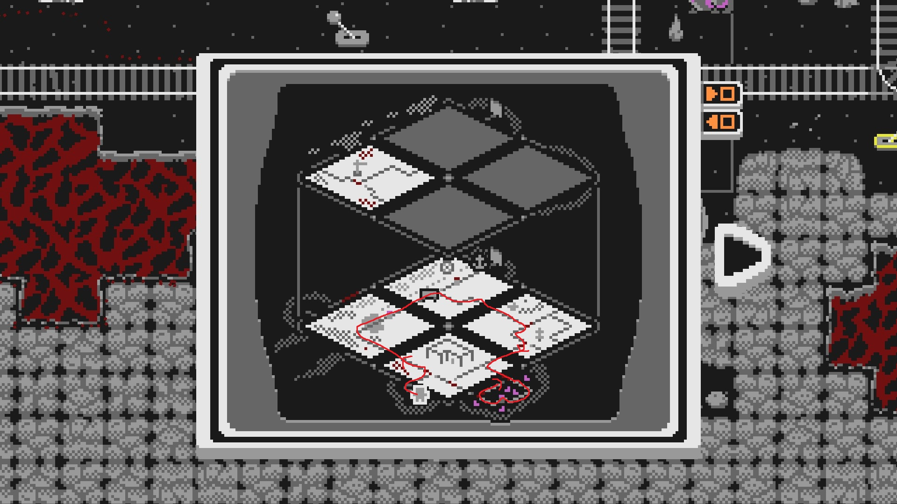
이번에는 광산 수레를 왼쪽으로 보내세요. 숲 타일의 하단 스위치가 꺼져 있는지 확인하세요. 광산 수레가 루프에 들어가면 다음 모습이 되도록 타일을 이동시키세요:
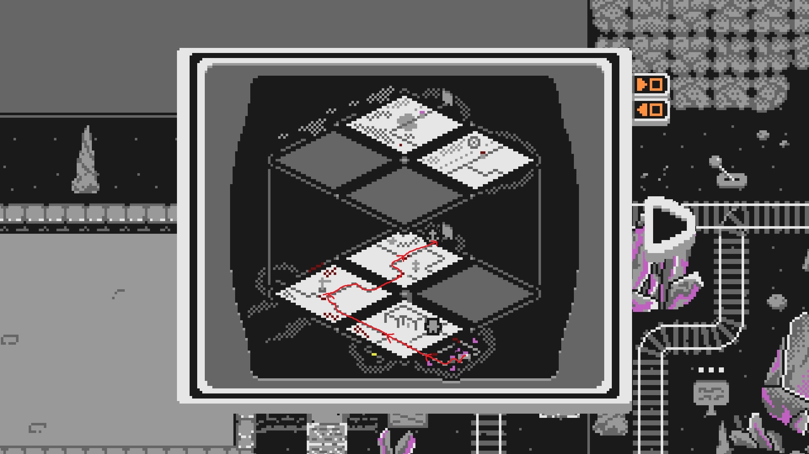
그런 다음, 하단 스위치를 눌러 광산 수레를 루프에서 해방시킵니다. 숲 타일의 상단 스위치가 켜져 있는지 확인하세요. 광산 수레가 발전기에 크리스탈을 전달하여 수리하고 엘리베이터에 다시 전원을 공급할 것입니다.
마침내 크리스탈 광산의 수석 엔지니어를 만났고, 그녀는 물레바퀴 히터를 수리할 파이프를 가지고 있습니다! 하지만 그녀는 엘리베이터에 대해 꽤 고민하고 있는 것 같습니다. 파이프를 얻으려면 그녀를 도와야 합니다.
얼음 지대에 감명받지 않은 엔지니어는 엘리베이터가 올라가기만 하는 것이 아니라 내려가는 것을 보고 싶어 합니다! 광산 수레를 엘리베이터로 내려보낼 방법을 찾아야 합니다.
힌트 1: 광산 수레가 있는 타일을 이동시키면 수레가 멈춥니다. 하지만 다른 타일은 움직일 수 있죠.
힌트 2: 광산 수레가 엘리베이터에서 나오는 타일은 다시 들어가는 데 사용하는 타일과 다를 수밖에 없습니다.
해답: 먼저 지하실 타일의 왼쪽 레버를 켜고 오른쪽 레버를 끄세요. 타일을 다음과 같이 세팅하세요:
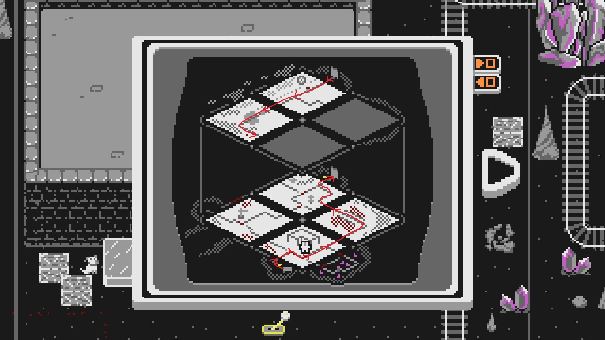
광산 수레가 상층으로 올라가는 동안 다음 구성이 되도록 타일을 미세요. 지하실 타일의 왼쪽 레버를 꺼야 합니다. 광산 수레가 있는 타일을 움직이지 않도록 주의하세요!
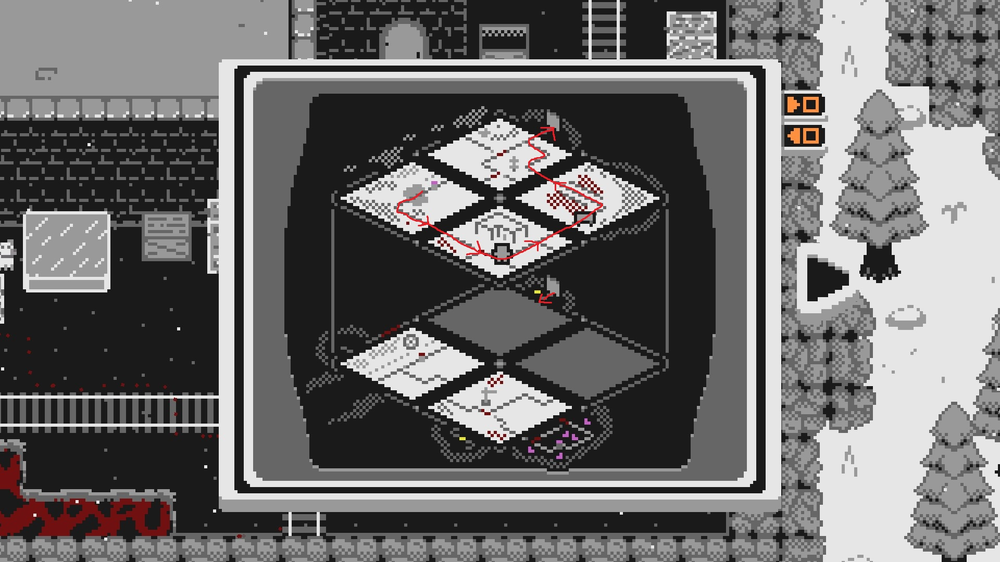
광산 수레가 엘리베이터로 내려가면 엔지니어와 대화하세요. 그녀가 비켜줄 것입니다. 파이프를 가지고 히터를 수리하세요.
이제 히터에 용암 양동이 2개 분량을 채워넣을 시간입니다! 용암을 어떻게든 광산 수레에 담아야 하고, 광산 수레를 계속 움직이게 해야 합니다.
힌트 1: 이전에 봤던 용암 양동이를 자세히 살펴보세요. 그 모양이 익숙해 보이지 않나요?
힌트 2: 광산 수레를 빙판 타일 지름길 또는 엘리베이터로 내려보내야 합니다.
힌트 3: 아직 완전한 루프를 만들 수 없습니다. 타일 중 하나를 조금 움직이며 풀어야 합니다.
해답 1단계: 광산 수레를 용암 폭포 아래로 지나가게 하면 용암으로 채울 수 있습니다.
해답 2단계: 지하실 타일의 왼쪽 레버는 켜져 있고, 오른쪽 레버는 꺼져 있으며, 숲 타일의 오른쪽 하단 레버가 켜져 있는지 확인하세요. 타일을 다음과 같이 세팅하세요:
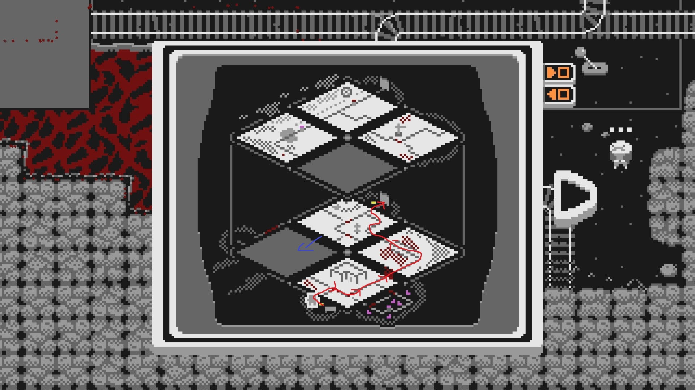
광산 수레는 용암 폭포 아래를 지나갈 때 용암으로 채워질 것입니다. 광산 수레를 정거장에 내려놓은 후, 거대한 빙판 타일로 달려가세요. 광산 수레가 엘리베이터에 들어가면 숲 타일을 빙판 타일 아래층으로 밀어넣으세요.
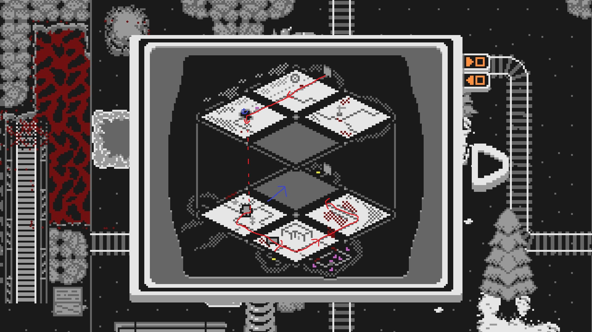
광산 수레가 빙판 위나 근처에 있을 때 닻을 떨어뜨려 얼음을 깨세요. 광산 수레가 숲 타일을 빠져나오면 다시 엘리베이터 쪽으로 밀어 올리세요. 광산 수레는 다시 한 번 용암으로 채워질 것입니다. 히터에 도달하면 용암으로 채워지기 시작합니다. 히터가 가득 차면 작동하여 물레바퀴의 얼음을 녹입니다.
물레바퀴가 돌아가니 이제 새 추출기 탱크만 있으면 됩니다. 버트가 하나 만들어주겠다고 하지만 대가로 크리스탈을 요구합니다!
힌트 1: *어떤* 타일이라도 움직이면 광산 수레 안의 크리스탈이 파괴됩니다.
힌트 2: 다시 한 번 거대한 빙판을 사용해야 합니다.
힌트 3: 건설 크레인이 있는 타일만이 광산 수레가 크리스탈을 가지고 버트에게 도달할 수 있는 유일한 경로입니다.
해답: 타일을 아래와 같이 세팅하세요
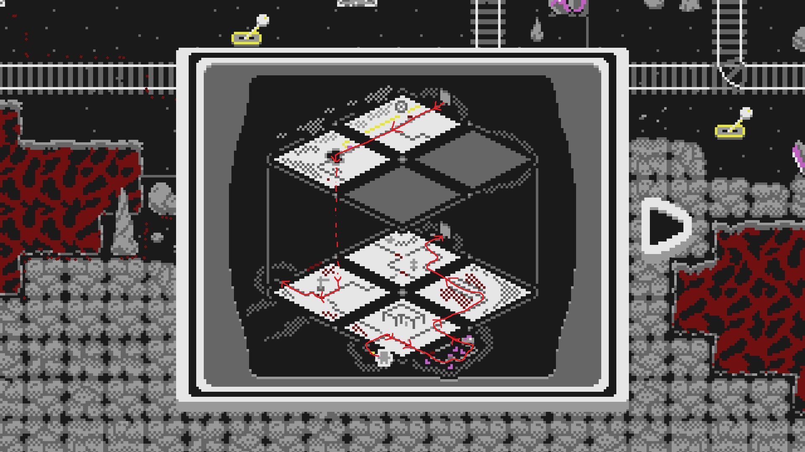
루프에서 크리스탈을 얻어 엘리베이터로 올리고, 얼음을 통과해 버트에게 전달하세요. 그가 추출기 탱크를 줄 것이고, 이를 사용해 추출기를 수리할 수 있습니다. 수리되고 전원이 공급되면 사라가 슬라이드 타일 7을 줄 겁니다.
크리스탈 점액을 만들 시간입니다! 수레 2개 분량의 크리스탈이 필요하고, 추출기 타일을 움직일 수 없으며, 다시 한 번 광산 수레를 계속 움직이게 해야 합니다. 과학을 위해서죠!
힌트 1: 루프 동안 어떤 타일도 움직일 수 없습니다. 타일 세팅을 신중하게 계획하세요! 용암 루프 설정과 비슷할 겁니다.
힌트 2: 나무와 통나무 더미가 있는 타일은 레일 설정이 매우 비슷합니다.
해답: 2가지 해결책이 있습니다. 그 중 오직 1가지만 가능할 것입니다!!! 이는 이전 타일 배치에 따라 다릅니다. 레버 상태를 확인하는 것을 잊지 마세요!
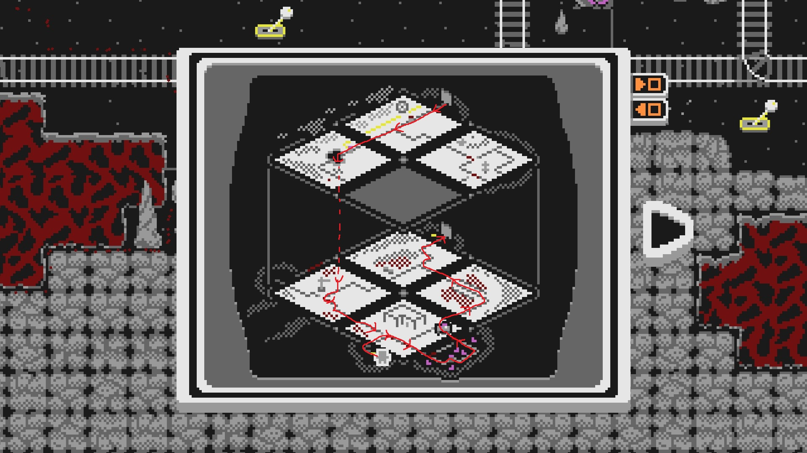
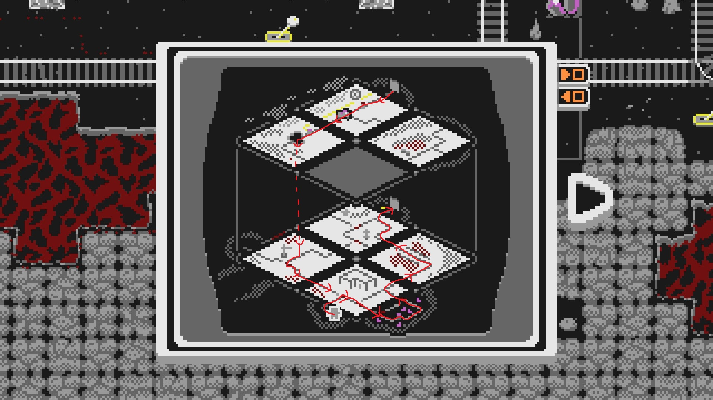
산꼭대기 정거장에서 따뜻한 코코아를 마실 시간입니다. 이 지역을 완성한 후, 엔지니어가 로켓 공장의 공장장에게 가져갈 크리스탈 샘플을 줄 것입니다. 평원에서 외계인을 물리쳤다면 게임의 마지막 지역인 MRI에 접근할 수 있습니다!
Slider의 마지막 지역인 마법 연구 학회에 오신 것을 환영합니다! 이 지역은 현재와 과거 버전의 타일이 각각 있으며, 닻을 중심으로 한 비동기화 메커니즘이 특징입니다. 지도의 오른쪽 하단 구석으로 걸어가서 연금술사 무타와 대화하세요.
양쪽 그리드를 채우는 것 외에도 보석 연료 기계에 전원을 공급하기 위해 9개의 보석을 찾아야 합니다. 플레이하면서 대부분을 찾을 수 있겠지만, 놓친 것이 있을 경우를 대비해 모든 보석의 위치를 알려드리겠습니다.
지도의 오른쪽 하단 구석에 페지위그가 첫 번째 보석을 가지고 있습니다. 가서 그와 대화하세요.
해답: 'E'키(또는 상호작용에 할당된 키)를 눌러 보석을 집어 보석 연료 기계에 전달하세요.
격변의 땅으로 가는 포탈을 활성화한 후, 사막 사원으로 돌아가 더 탐험하세요.
해답: 사막 보석은 사막 사원의 새로 발굴된 지하 오른쪽 부분에 있습니다.
거대 레이저 없는 마법 연구 학회가 말이 되나요! 주변에 폭파할 수 있는 큰 바위들이 있고, 군사 보석은 그중 하나인 왼쪽 하단 구석에 갇혀 있습니다. 두 번째 타일의 레이저 캐논이 길을 열어줄 수 있습니다.
힌트: 레이저 타일에서 아래의 스위치를 눌러 레이저를 활성화하세요. 포탈을 통해 레이저를 보낼 수 있습니다.
해답: 군사 보석은 과거의 왼쪽 거대한 바위 뒤에 있습니다. 근처의 폭탄 표지와 상호작용하여 바위에 폭발물을 설치하세요. 포탈을 통해 레이저를 쏴서 바위를 폭파하고 보석을 수집할 수 있습니다.
마을 보석은 레이저 타일의 오른쪽 상단에 있습니다. 하지만 문제가 있네요. 전기로 작동하는 문 뒤에 잠겨 있는데, 그 문을 여는 버튼이 문 안쪽에 있습니다. 어떻게 해야 할까요?
힌트: 얽혀있는 아이템의 과거 버전 위치를 변경하면 현재 버전의 위치에 영향을 줍니다.
해답: 과거 포탈 타일에서 과거(분홍색) 구슬을 집어 과거 레이저 타일의 오른쪽 상단으로 가져가세요. 상자 안에 놓으세요. 현재(노란색) 버전의 구슬이 현재의 같은 위치로 텔레포트되어 현재 레이저 타일의 버튼을 활성화할 것입니다. 현재 레이저 타일로 돌아가 보석을 획득하세요. (비동기화되지 않았는지 확인하세요!)
슬라이더 4의 힌트를 참조하세요.
동굴 보석은 과거의 지도 오른쪽 하단에 있습니다. 얽혀있는 구슬을 사용하여 안으로 들어가세요.
힌트: 얽힌 전도체 구슬을 사용해야 하지만, 비동기화는 필요 없습니다!
해답: 닻을 사용하여 전선을 연결하고 첫 번째 문을 여세요. 과거 구슬을 아래로 가져와 첫 번째 문 뒤에 놓으세요. 현재의 보석 기계 근처로 가서 현재 구슬을 집어 전선을 연결하세요. 닻을 잡아서 보관하세요. 첫 번째 문을 통과하여 과거 구슬을 잡아 드세요. 이렇게 하면 현재 구슬의 위치가 초기화됩니다. 보석을 수집하고, 스위치를 눌러 나가세요.
과거의 마을에 있는 마법사가 보석을 가지고 있지만, 백만 달러를 요구하고 있습니다!
힌트: 사막 카지노의 금고에 많은 돈이 있습니다!
해답: 연구소장은 우리가 레이저를 사용하는 것을 반대하지만... 채드가 뭔가 할 수 있습니다. 레이저가 포탈을 통과하여 카지노로 발사되도록 세팅하세요. 카지노 오른쪽 바깥에 폭탄을 설치하면 채드가 레이저를 켜는 것을 처리할 것입니다. 그런 다음, 돈을 가지고 도망가세요! 과거 마을의 마법사에게 금액을 지불하고 정글 보석과 보석 연료 레시피를 얻을 수 있습니다.
9번째 타일로 가서 연못의 목소리와 대화하세요.
해답: 재정렬의 두루마리를 사용하여 MRI를 모두 다시 조립하세요. 성찰의 연못에서 대화를 진행하여 유물을 포기하세요.
바다 보석을 잡아 기계에 넣은 다음, 연금술사 무타와 대화하여 멋진 보석 운반기와 첫 번째 슬라이드 타일을 얻으세요.
해답: 보석 연료 기계 옆의 바다 보석을 집고, 기계 근처에서 사용하여 넣으세요. 무타와 대화하고 보석 운반기를 획득한 다음, 바다 보석을 다시 잡으세요.
포탈이 나타납니다. 어디로 이어질까요? 과거를 탐험하여 다음 슬라이드 타일을 찾으세요.
해답: 과거 버전 지도의 왼쪽 상단에서 채드를 찾을 수 있습니다.
격변의 땅에서 온 화석을 연구하여 마법 연구 학회 과학자들이 초강력 레이저를 만들었습니다! 이를 테스트하기 위해 바위를 폭파하고 기름을 회수해야 합니다.
힌트: 타일에 닻을 떨어뜨리면 비동기화가 발생합니다. 타일을 제자리에 고정시키는 대신, 다른 차원에서 타일을 개별적으로 움직일 수 있게 합니다.
해답: 레이저를 그리드의 오른쪽으로 이동시키고 포탈을 중앙에 두세요. 레이저 타일에 닻을 떨어뜨리고, 포탈을 통해 과거로 이동한 다음, 과거의 레이저 타일을 포탈의 왼쪽으로 옮기세요. 폭탄 표지와 상호작용하여 바위를 폭파하세요. 기름을 집어 레이저 타일에 있는 과학자에게 가져가세요.
박물관으로 들어가면 큐레이터를 만나게 됩니다. 그는 방어막 생성기를 두고 전투 중 사망한 두 마법사의 이야기를 들려줍니다. 이 방어막 생성기는 현재 박물관에 보존되어 있습니다. 만약 상황이 다르게 끝났다면, 전투의 다른 유물이 남아있을 수도 있겠죠. 역사를 바꿀 수 있을까요?
힌트: 현재의 방어막 생성기에 접근하려면, 과거에서 마법사 중 한 명에게 방어막 생성기를 주세요.
해답: 과거 박물관 타일에서 분홍색 방어막 생성기를 두 마법사 중 하나에게 주세요. 그 마법사가 결투에서 이겨 보석을 만들고, 이 보석이 박물관에 보존됩니다. 현재 박물관 타일로 가서 박물관 위층에서 현재의 방어막 생성기를 가져와 다른 마법사에게 주세요. 박물관으로 돌아가 큐레이터와 대화하고 산장 보석도 획득하세요 (불쌍한 큐레이터. 그의 걱정이 현실이 되었네요).
새 타일에는 매우 배고픈 직원이 있는데, 햄버거 하나로는 만족하지 않습니다. 이 햄버거는 최초로 만들어진 햄버거와 얽혀있어서, 여러분이 그걸 훔쳐야 합니다.
힌트 1: 현재의 얽혀있는 아이템을 과거로 가져갈 수는 있지만, 현재 버전이 사라지지 않고서는 과거의 아이템을 현재로 가져올 수 없습니다. 시간의 규칙을 깰 수 있다면 이야기가 다르겠지만...
힌트 2: 얽혀있는 아이템 중 하나라도 비동기화된 타일 위에 있다면, 귀찮은 시간 연속성 규칙이 적용되지 않습니다.
해답: 배고픈 직원의 타일을 닻으로 고정하고, 과거로 전환한 다음 과거 타일을 다른 위치로 이동시켜 비동기화하세요. 과거의 햄버거에 번개 효과가 생길 것입니다. 과거의 햄버거를 가져와 배고픈 직원 옆 테이블에 놓으세요. 두 햄버거가 모두 직원 근처에 있으면, 그가 슬라이드 타일 6을 줄 것입니다.
새 타일의 과거 버전에 있는 성에 다음 슬라이드 타일 조각이 있습니다. 그곳으로 가는 유일한 다리가 부서져 있고, 버섯 모자를 쓴 마법사가 어째서인지 버섯을 무서워하고 있습니다.
힌트: 레이저로 버섯을 맞추면 버섯이 줄어듭니다.
해답: 성과 다리를 한 줄에 정렬하고, 포탈과 레이저를 다른 줄에 정렬하세요. 현재 포탈 타일을 닻으로 고정하고, 과거 포탈 타일을 이동시켜 비동기화하세요. 과거 포탈 타일을 성과 같은 줄로 이동시키세요. 버섯 모자를 쓴 마법사와 대화하고 다리를 건너 성으로 들어가세요.
여러분이 탈 로켓 아래에서 엔지니어가 예비 연료로 4개의 기름을 필요로 합니다. 폭파할 수 있는 바위와 주변에서 기름을 찾으세요.
힌트 1: 로켓 발사대 오른쪽 상단에 숨겨진 기름이 하나 있습니다.
힌트 2: 다른 두 개의 기름은 폭파할 수 있는 바위 안에 있습니다. 하나는 과거에, 다른 하나는 현재에 있습니다.
힌트 3: 현재의 바위를 폭파하려면 레이저를 포탈을 통해 두 번 통과시켜야 합니다.
기름 #2 (현재 로켓 타일) 해답: 기름 #2는 로켓 타일 오른쪽 상단의 물품 더미에 있습니다.
기름 #3 (과거 로켓 타일) 해답: 로켓, 포탈, 레이저 타일을 왼쪽에서 오른쪽으로 정렬한 다음, 과거 로켓 타일의 바위를 폭파하세요.
기름 #4 (현재 거울 타일) 해답: 먼저 로켓, 배고픈 직원 타일, 레이저를 아래쪽 줄에 정렬하고 현재 레이저 타일을 닻으로 고정하세요. 레이저가 중앙에서 위로 반사되어야 합니다. 포탈을 왼쪽 중앙에 놓고 그 위에 박물관을 배치하세요. 그리고 현재의 폭파 가능한 바위를 오른쪽 상단 모서리에 놓으세요. 과거로 이동하세요. 과거 레이저 타일을 비동기화하고 위쪽 줄 중앙으로 옮길 수 있는 경로가 있어야 합니다. 포탈을 오른쪽으로 한 칸 옮겨 중앙에 놓고 로켓을 위로 한 칸 옮기세요. 레이저가 오른쪽 하단에서 시작해 중앙의 포탈로 반사되어 올라가고, 과거에서 반시계 방향으로 돌아 현재 포탈의 오른쪽으로 나와야 합니다. 현재의 바위를 폭파하고 발사대 근처의 로켓 엔지니어에게 돌아가세요.
8번째 슬라이드 타일은 두 건물이 있는 타일에서 동굴 보석과 비슷한 퍼즐 뒤에 갇혀 있습니다. 얽혀있는 레버와 상호작용하여 안으로 들어가세요.
힌트: 닻을 잊지 마세요!
해답: 과거에서 레버를 뒤집어 바깥쪽 문이 열리게 하세요. 현재 금고 타일에 닻을 놓으세요. 과거로 돌아가 타일을 움직여 비동기화하고, 스위치를 뒤집어 안쪽 문이 열리게 한 다음 현재로 돌아가세요. 바깥쪽 문을 통과한 다음, 키보드의 미리보기 키를 누른 채로 과거 타일을 다시 원위치시키거나 바깥쪽 문 안에 있는 동안 닻을 집어 비동기화를 풉니다. 이렇게 하면 바깥쪽 문이 닫히고 안쪽 문이 열립니다. 스위치를 건드려 나가세요.
마공학 보석을 제외한 모든 보석을 수집한 다음, 연금술사 무타와 대화하여 마지막 슬라이드 타일을 얻으세요! 아마 정글 보석이 없을 것 같은데, 위의 보석 문단을 참고해보세요.
정말 대단한 여정이었습니다! 모든 보석을 수집했다면, 연금술사 무타와 대화하여 로켓에 보석 연료를 공급하세요. 발사대 근처의 문과 상호작용하면, 여러분의 고양이와 재회하기 위한 최후의 여정이 시작됩니다!
Slider를 플레이해 주셔서 감사합니다!
각 지역에는 숨겨진 빵 조각이 있습니다. 이들은 모두 지역을 클리어한 후에도 접근 가능합니다. 9개를 모두 모으면 마법 연구 학회의 빵집에 가져가 멋진 깜짝 선물을 받을 수 있습니다. 이 모든 것은 지역의 모든 타일을 수집한 후에도 얻을 수 있습니다. 행운을 빕니다!
더 많은 도전을 원하신다면, 각 지역에는 보너스 업적이 있으니 이것들에 도전해 보세요. 이 업적들 대부분은 특정한 방식으로 지역을 완료해야 하므로, 아마 새로운 세이브에서 다시 시작해야 할 것입니다. 보통 다른 게임에서는 치트를 사용하면 이러한 챌린지 업적이 비활성화되지만, 여러분은 "텔레포트", "닻 소환", "두루마리 + 부츠" 치트를 사용하여 업적을 위한 각 지역에 빠르게 도달할 수 있습니다 (*하지만 어떤 치트라도 사용하면 해당 세이브 파일에서 스피드런 업적이 비활성화됩니다). 또한 여러분이 매우 즐길 수 있을 1시간 스피드런 업적도 있습니다. 이 모든 것을 달성하는 데 행운이 있기를 바랍니다!